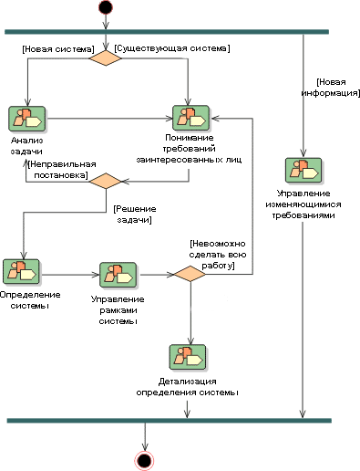

| Концепция: Шаблон возможностей |
 |
|
|
Шаблоны возможностей применяются разработчиками процессов для обмена информацией о процессах в определенной области, например дисциплине. Кроме того, они используются в качестве компонентов, из которых формируются процессы поставки и большие шаблоны возможностей. Такой подход позволяет оптимизировать многократное использование базовых кластеров операций.
Примерами шаблонов возможностей могут служить "управление требованиями на основе вариантов", "анализ вариантов" и
"тестирование блока". Обычно, хотя не обязательно, шаблоны возможностей затрагивают одну дисциплину и представляют
собой структуры, состоящие из многоразовых сложных операций и их связей с ролями, выполняющими задачи этих операций, и
используемыми и создаваемыми продуктами работы. Как правило, шаблоны возможностей не привязаны к конкретным
итерациям и этапам жизненного цикла и не должны зависеть от них. Иными словами, шаблоны должны быть разработаны
таким образом, чтобы они были применимы в любой точке процесса поставки. Это позволяет использовать
соответствующие комплексы операций в любых этапах процесса поставки. Исключение из этого правила составляют
шаблоны возможностей, применяемые в качестве шаблонов для быстрого создания итераций или частей итераций конкретного
этапа процесса поставки.
Для пояснения потоков операций шаблона возможностей обычно применяются диаграммы операций UML. 
Пример диаграммы операций дисциплины управления требованиями RUP. На диаграмме показаны поток операций и
переходы. |
© Copyright IBM Corp. 1987, 2005 Все права защищены |